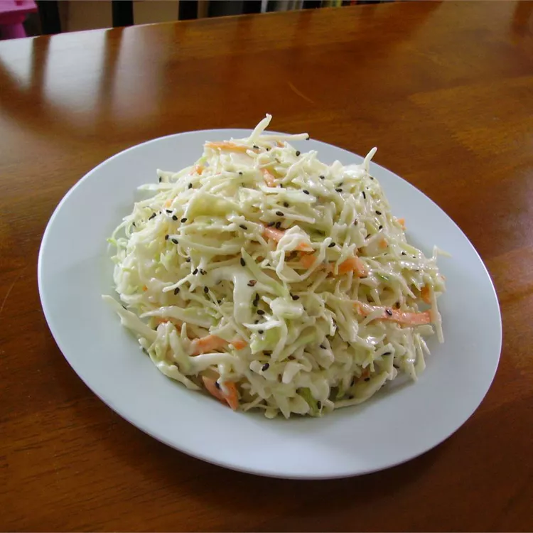

Sweet Sesame Slaw

Description
This slaw recipe is a terrific combination of cabbage, carrot, and jicama mixed with a deliciously different creamy Asian-inspired dressing!
Ingredients
- 1 head green cabbage, shredded
- 1 large carrot, grated
- 1 cup grated jicama
- 1 tablespoon black sesame seeds
- 1 cup mayonnaise
Steps
- Place cabbage, carrot, jicama, and sesame seeds in a large bowl.
- Whisk together mayonnaise, vinegar, sesame oil, and honey in a small bowl.
- Drizzle the dressing over the salad; toss until evenly coated. Chill at least 4 hours before serving.
Go Home Page